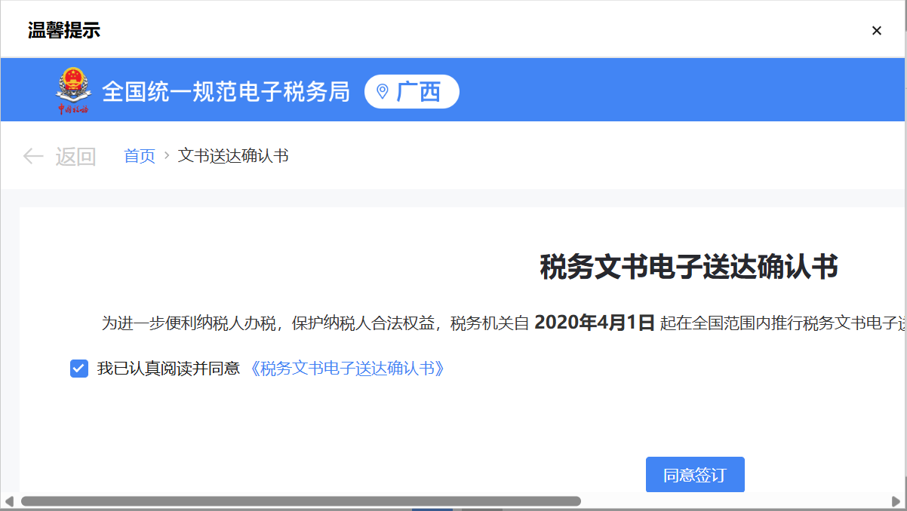
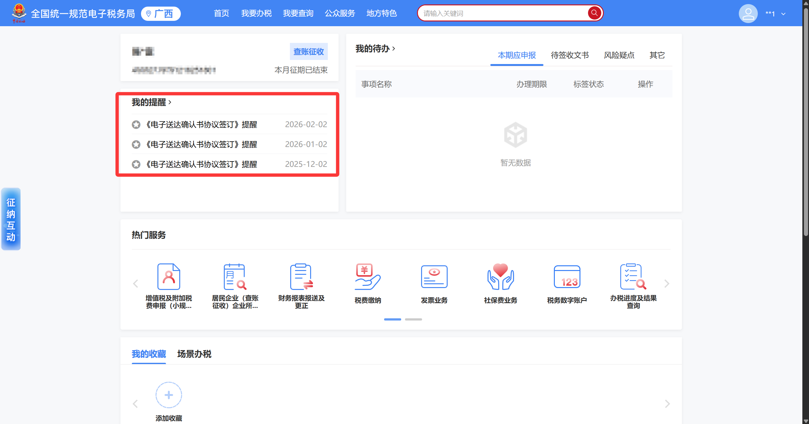
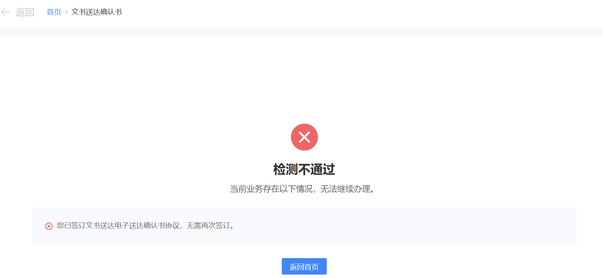
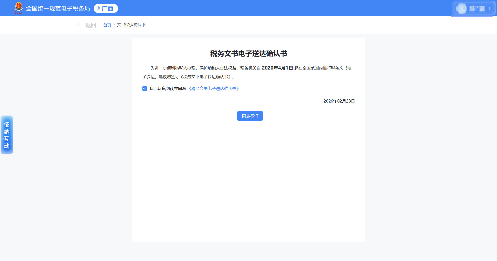
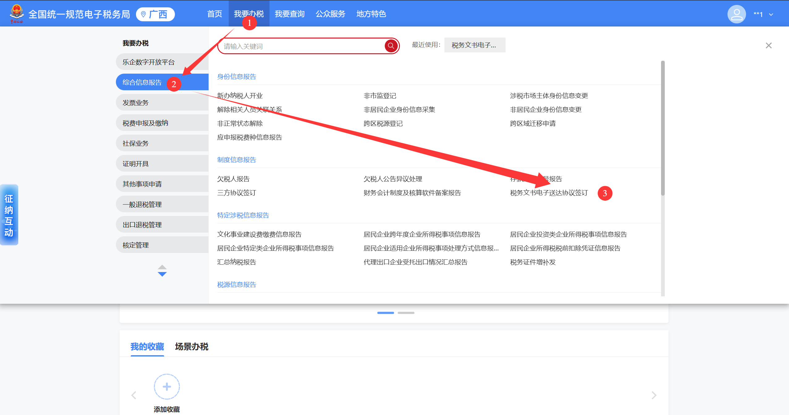
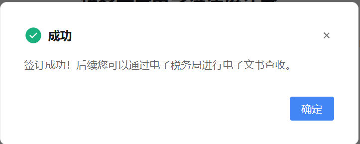

✕
点击空白处或按 ESC 关闭
| 签订方式 | 触发场景 | 操作难度 |
|---|---|---|
| 方式一 · 登录时弹窗提示 | 首次登录电子税务局，系统自动弹出提示 | ⭐ 最简单 |
| 方式二 · 首页"我的提醒"入口 | 首页存在协议签订提醒条目时可用 | ⭐⭐ 较简单 |
| 方式三 · 我要办税入口 | 主动进入办税功能，适合任何时候操作 | ⭐⭐⭐ 稍复杂 |






| 问题 | 原因分析 | 解决方案 |
|---|---|---|
| 登录后没有弹出签订提示 | 已签订过，或系统未触发弹窗 | 通过方式三主动进入"税务文书电子送达协议签订"页面，系统会自动识别签订状态 |
| 首页"我的提醒"没有协议签订提醒 | 已签订，或提醒条目已过期/被清除 | 同上，通过方式三主动查询确认 |
| 点击【同意签订】后提示失败 | 网络不稳定或系统繁忙 | 刷新页面后重试；若仍失败，拨打 12366 反映 |
| 不签订电子送达协议会有什么影响 | 未完成协议签订 | 税务机关将采用传统纸质方式送达，可能导致接收不及时，建议尽快完成签订 |